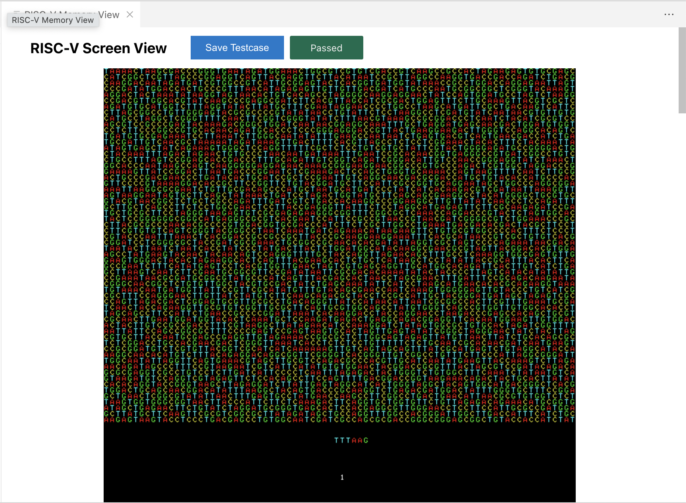
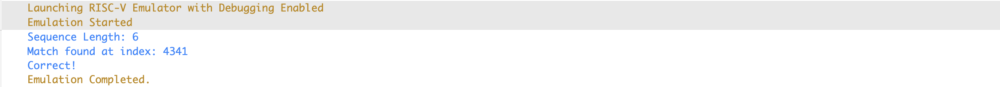
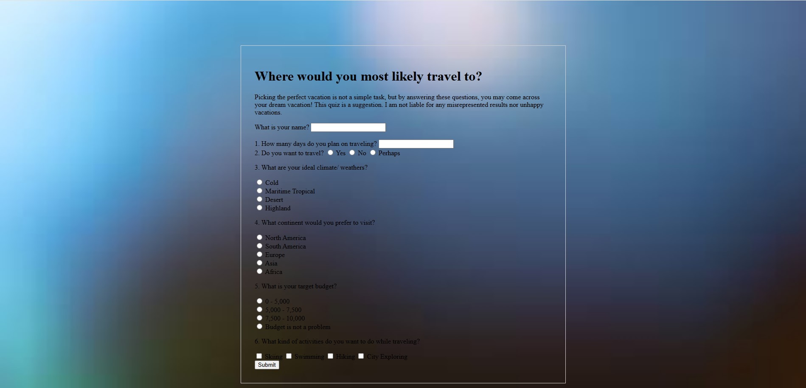
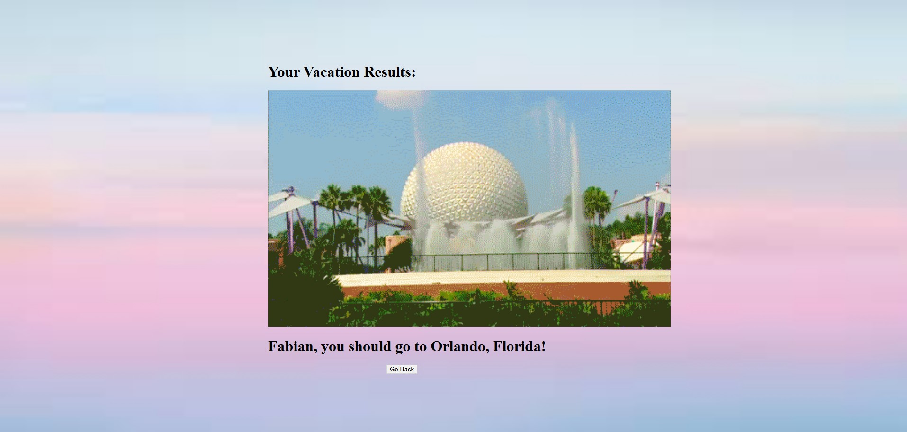

Technical Projects
DNA Pattern Matching in RISC-V Assembly
This project involved implementing the Knuth-Morris-Pratt (KMP) string matching algorithm in RISC-V assembly to find DNA patterns packed in a 2-bit format. It optimized memory usage and achieved efficient scanning across large biological datasets.


Visualization of match indices in sequence
Travel Destination Suggestion
Built an interactive survey that could output a travel destination based on some given inputs. Some of these inputs include

